Visit the official Visual Studio Code website to download the installer specifically built for your operating system (Windows 64-bit). The editor is completely free and optimized for web development and scripting projects.
Detailed Technical Information
When selecting the executable file, you are faced with a choice between the User Installer and the System Installer. It is generally recommended to select the User Installer for single-user workspaces because it does not require local Administrator privileges and keeps all IDE files isolated within your user account directories.
What to Click
Open a web browser such as Chrome, Edge, or Firefox.
Search for Visual Studio Code download or open the official VS Code website.
Click the Download for Windows button.
Choose the Windows installer and wait for the .exe file to download.
Open the downloaded installer from the browser download bar or Downloads folder.
File Format: Direct installer executable (.exe bundle)
Source Validation: Always fetch binaries exclusively from the official code.visualstudio.com domain to guarantee secure code signatures.
Image placeholder: Visual Studio Code download page
Step 2: Run Setup Wizard
Run the downloaded installer, accept the licensing agreements, and follow the instructions to register VS Code on the local PATH. Select options to add 'Open with Code' actions for ease of file access.
Detailed Technical Information
During the setup wizard configuration steps, pay close attention to the final select boxes. Enabling core shell integration actions drastically improves your workspace efficiency by allowing folder launches directly from the system explorer context menus.
What to Click
Double-click the downloaded VS Code installer file.
Click I accept the agreement, then click Next.
Keep the default installation location or choose a preferred folder, then click Next.
Select useful options such as Add to PATH and Open with Code.
Click Install and wait for setup to complete.
Click Finish to launch Visual Studio Code.
Add to PATH: This registration step ensures the code alias command can be invoked globally from any system terminal panel to open files immediately.
Other Actions: Enable "Add 'Open with Code' action to Windows Explorer directory context menu" to open folders dynamically by right-clicking.
Register Editor: Select to register VS Code as an editor for supported file types to easily handle script modifications.
Image placeholder: VS Code installer steps
Step 3: Open Project Workspace
Launch Visual Studio Code. Click on File > Open Folder... from the top navigation bar and select your dedicated local Tinkerers Lab development workspace folder.
Detailed Technical Information
Establishing a local project workspace isolates all file interactions, editor configurations, and extension behaviors. It is best practice to keep a dedicated project root folder to house all layout sub-directories, web style sheets, and scripts.
What to Click
Open Visual Studio Code.
Click File in the top menu bar.
Click Open Folder....
Select your Tinkerers Lab project folder from the file explorer.
Click Select Folder.
If VS Code asks for workspace trust, click Yes, I trust the authors.
Hotkey Action:Ctrl + K, Ctrl + O triggers the direct system file dialog drawer immediately.
Terminal Launching: You can also run the terminal command code . inside your target workspace directory to launch VS Code instantly focused on that directory.
Local Settings: VS Code creates a hidden folder named .vscode inside this folder to store any customized project settings (such as formatting preferences).
Image File Reference: image/VSCODE4.jpeg
Step 4: Active Code Workspace
Confirm that your main work files (such as index.html, style.css, and script.js) are displayed cleanly in the Explorer file explorer sidebar, ready for development.
Detailed Technical Information
The VS Code UI is segmented into highly focus-centric panels designed to keep developers in their active coding flow. The Primary Sidebar handles folder management, search actions, source commits, debugging layouts, and extensions access.
What to Check
Look at the left side Explorer panel.
Confirm that files such as index.html, style.css, and script.js are visible.
Click a file name to open it in the editor area.
Use View > Terminal to open the integrated terminal if command work is needed.
Save changes using File > Save or Ctrl + S.
File Tree Explorer: Displays your project structure. Status indicators show if files have untracked changes.
Integrated Terminal: Open an embedded command shell inside your workspace using the key command Ctrl + `, eliminating the need to toggle background windows.
Status Bar: The bottom ribbon shows your active git branch, editing encoding types, indent format dimensions (spaces vs tabs), and script syntaxes.
Image File Reference: image/VSCODE5.jpeg
Overview of VS Code Features
Primary Uses
Writing, editing, and managing source code
Robust frontend web development (HTML, CSS, JavaScript)
To visual and manage Git commit cycles easily, navigate to the official GitHub Desktop page and download the graphical application bundle for Windows.
Detailed Technical Information
Git acts as the local version control engine tracking every character difference in your code files, while GitHub acts as a secure cloud-hosting platform. Using a dedicated graphical user interface (GUI) like GitHub Desktop bridges local Git controls into clear visual commit representations without requiring CLI terminal commands.
What to Click
Open a web browser.
Search for GitHub Desktop download or open the official GitHub Desktop website.
Click Download for Windows.
Wait for the GitHub Desktop installer file to download.
Open the installer from the Downloads folder.
Availability: Supported on Windows 10/11 64-bit architecture systems.
Core Advantage: Simplifies Git interactions like conflict resolutions, branch switching, and push-pull updates through visually intuitive workflows.
Image File Reference: image/GITHUB1.jpeg
Step 2: Run GitHub Installer
Run the executable to proceed with the quick automated configuration. This configures standard Git parameters on your machine inside a single, unified client framework.
Detailed Technical Information
The installation of GitHub Desktop prepares your system's underlying Git environment variables automatically. The setup installer runs seamlessly, configuring directories and launching into the local authorization dialog screen.
What to Click
Double-click the downloaded GitHub Desktop installer.
Wait while the installer automatically extracts and installs the app.
When GitHub Desktop opens, click Sign in to GitHub.com if prompted.
If the app opens without a prompt, click File > Options and go to the account sign-in area.
Installation Actions: No manual step-by-step path adjustments or dependencies are required; the installer handles full package distribution automatically.
Global Setup: This stage prepares the system's global Git config files (.gitconfig) that link local commits with your visual identity.
Image File Reference: image/GITHUB2.jpeg
Step 3: Authenticate GitHub Credentials
Sign in with your standard username and credentials on the browser popup prompt to synchronize the desktop environment to the cloud service.
Detailed Technical Information
Synchronization requires secure, verified user authentication. When signing in, GitHub Desktop routes you to a secure OAuth authorization portal within your browser. Once granted, a secure digital access token is securely stored locally on your machine, eliminating the need to input passwords during subsequent cloud interactions.
What to Click
Click Sign in to GitHub.com inside GitHub Desktop.
A browser window will open for secure GitHub login.
Enter your GitHub username/email and password.
Complete any verification step if GitHub asks for it.
Click Authorize GitHub Desktop.
Return to GitHub Desktop after authentication is complete.
Token System: Secure local keychain authorization instead of standard text passwords.
Account Links: Links local commit logs to your global user profile for accurate contribution metrics.
Step 4: Create a New Local Repository
Start a new tracking instance by clicking Create a new Repository on your hard drive..., configuring the title, path, and standard branch names.
Detailed Technical Information
A repository is the master folder container that stores all your code, resource assets, and historical changes. Initializing a repository via GitHub Desktop creates a hidden database folder named .git in the background to log every single file modification.
What to Click
In GitHub Desktop, click File from the top menu.
Click New Repository....
Enter the repository name in the Name field.
Choose the local folder path where the project should be stored.
Add a short description if needed.
Click Create Repository.
Name Rules: Keep names concise and lower-case, utilizing hyphens (e.g. tinkerers-lab-portfolio) to prevent browser URL rendering issues.
Target Directory Path: Map this path directly to your local project directory folder structure.
Default Branch: Standardizes on the industry-standard branch name main.
Image File Reference: image/GITHUB4.jpeg
Step 5: Initialize with Workspace Assets
Select appropriate local directories, setup standard repository structures, select GitIgnore configuration variables, and click 'Create Repository'.
Detailed Technical Information
Proper repository initialization prepares your project for standard production developer cycles, ensuring that large, unnecessary temporary files are ignored, licenses are declared, and markdown descriptions are available.
What to Click
In the new repository window, tick Initialize this repository with a README if available.
Select a suitable Git ignore option if the project type is listed.
Choose a license only if the project needs to be shared publicly.
Click Create Repository.
After creating files in VS Code, return to GitHub Desktop to view changed files.
Write a commit message and click Commit to main.
Click Publish repository to upload the project to GitHub.
README.md Initialization: Creates an essential Markdown file containing introductory details about your project.
GitIgnore Templates: Tells Git to permanently ignore large dependencies, temporary log files, and sensitive credentials.
License Declaration: Declares licensing definitions (such as the MIT License) specifying how others can utilize your project.
Image File Reference: image/GITHUB5.jpeg
Overview of GitHub and Version Control
Primary Uses
Remote backup and management of active code bases
Safe version management of development changes
Visual branch tracking and change merging workflow
Team-oriented pipeline collaboration and peer code reviews
Automated builds and tests using GitHub Actions (CI/CD)
Advantages
Free unlimited public and secure private repositories
Provides rich historical audit of all project edits
Ensures code safety via cloud rollback backups
Integrates with custom webhooks and tracking engines
Acts as a professional portfolio showcase for developers
3. Building the Portfolio Workspace
Technology Stack Selection
A professional web workspace layout requires highly responsive code structures and elegant interactive components.
Step-by-Step Portfolio Setup
Create a project folder for the portfolio website.
Open the folder in VS Code.
Create core files named index.html, style.css, and script.js.
Write the page structure in index.html using headings, sections, links, and image tags.
Add colors, layout spacing, typography, and responsive styling in style.css.
Add menu actions or page interactions in script.js.
Preview the website in a browser and fix layout issues.
Save all files, then commit the completed work through GitHub Desktop.
Integrated Tools
VS Code IDE ChatGPT Assistants GitHub Cloud Systems
On this day, the lab session focused on digital graphics, image formats, 3D CAD basics, and media tools. The work included understanding the difference between vector and raster images, using GIMP for image editing, and learning how digital design files are prepared for creative and technical projects.
1. Foundations of Digital Image Processing
Understanding Digital Formats
Step-by-Step Format Identification
Check the file extension first: common raster formats include .jpg, .jpeg, .png, and .bmp.
Check for vector formats such as .svg, .ai, .eps, .dxf, or .pdf.
Zoom into the image. If the edges become blurry or pixelated, it is usually raster.
If the edges stay sharp at any zoom level, it is usually vector.
Use raster tools such as GIMP for photo editing and vector/CAD tools such as Fusion for precise design drawings.
Vector Images (High-Fidelity)
Images defined using mathematical equations, vectors, paths, and points. These structures scale infinitely without suffering from pixelation, blurry boundaries, or sharpness degradation. Perfect for logos, layout schematics, icons, and typefaces.
Raster Images (Pixel-Based)
Images constructed through a strict, static coordinate grid of colorful pixels. Increasing scale forces scaling interpolation algorithms, which directly introduces blurring artifacts, visible pixel blocks, and severe sharpness loss. Best suited for high-color photos.
2. GNU Image Manipulation Program (GIMP)
Step 1: Open GIMP Portal
Access the official, open-source GIMP portal online. This robust raster graphics editing package functions as a complete replacement for premium design suites.
Detailed Technical Information
GIMP stands for GNU Image Manipulation Program. It represents a premier, free alternatives to paid raster suites, supporting dynamic tools for advanced color rendering, photographic adjustments, layout design, and digital drawings.
What to Click
Open a web browser.
Search for GIMP download or open the official GIMP website.
Click the Download button on the homepage.
Select the Windows version of GIMP.
Wait for the installer file to finish downloading.
Open the downloaded file from the Downloads folder.
Licensing: GNU General Public License (Free and open-source).
Run the installation packager on Windows, selecting language defaults and configuring advanced graphics processing configurations.
Detailed Technical Information
GIMP relies on highly efficient runtime setups. Running the package installer installs core libraries, links default workspace folder targets, and configures key brush utilities and color palettes on your local disk storage.
What to Click
Double-click the GIMP installer.
Select the preferred setup language and click OK.
Click Install for the standard installation.
Wait while the setup wizard copies files and configures the program.
Click Finish after installation is complete.
Open GIMP from the Start menu or desktop shortcut.
Path Settings: Installed within standard program files directories.
Extensions: Pre-configures support for standard plug-ins, brushes, patterns, and dynamic UI panels.
Image File Reference: image/Gimp2.jpeg
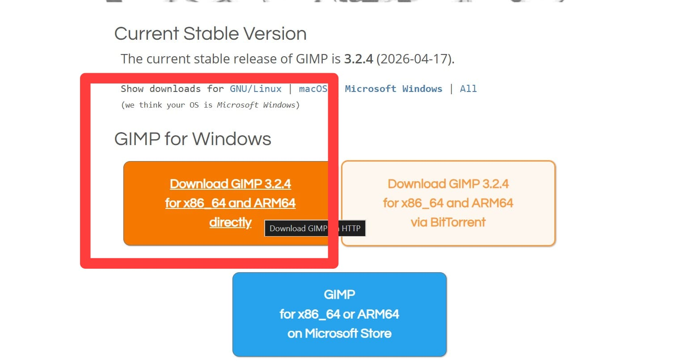
Step 3: GIMP Canvas Initialization
Launch GIMP, and open a brand new file workspace by choosing custom resolution layouts (such as 1920x1080) for layout work.
Detailed Technical Information
Creating a canvas requires specifying precise coordinate layouts, color modes, and resolution properties. This forms the foundation layer upon which raster modifications, masking operations, and pixel alignments are executed.
What to Click and Which Tool to Use
Open GIMP.
Click File > New.
Enter the required canvas width and height, such as 1920 x 1080 pixels.
Click Advanced Options if you need to set resolution, color space, or transparency.
Click OK to create the canvas.
Use the Move Tool, Text Tool, Paintbrush Tool, and Layers Panel to start editing.
Use File > Export As to save the final output as PNG or JPEG.
Pixel Space Layout: Setup standard dimensions using pixels or physical units (inches/mm).
Color Mode: RGB Color Profile for screen displays, with custom color depth adjustments.
Use Colors > Brightness-Contrast to improve image visibility.
Use the Text Tool to add labels or titles.
Use the Layers Panel to organize images, text, and effects separately.
Click File > Export As to export the final edited file.
Professional photographic adjustments and image retouching
Digital painting, visual sketches, and marketing posters
Layer-based image assembly and transparency masking
Creating tileable textures for 3D modeling pipelines
Automated batch file conversion and canvas size scaling
Designing user interfaces and custom application graphics
3. 3D Design Systems (Autodesk Fusion)
Step 1: Open Autodesk Site
Access Autodesk's global system interface to locate standard download links for student versions of Fusion.
Detailed Technical Information
Autodesk Fusion is an advanced cloud-enabled 3D CAD/CAM/CAE tool. Since it leverages cloud computations for background render routines and data synchronization, accessing download paths requires first establishing a verified education license credentials profile.
Apply for full educational student access using your official institutional email credentials and verify your student registration profile.
Detailed Technical Information
Verification is securely processed by uploading enrollment data or logging in via integrated institutional portals. Obtaining academic verification unlocks advanced modeling features, finite element analysis (FEA) suites, and cloud-rendering processing units.
What to Click
Click Create Account if you do not already have an Autodesk account.
Enter your name, email address, password, and country details.
Select Student or the relevant education role.
Enter institution details if Autodesk asks for them.
Upload or verify student information if prompted.
Wait for Autodesk to confirm education access.
Verification Steps: Standard verification requires providing school credentials or active course logs.
License Scope: Full individual educational CAD license activated on user accounts.
Image File Reference: image/Fusion2.jpeg
Step 3: Select Autodesk Product License
From the verified educational dashboard catalog, pick Autodesk Fusion's desktop design license suite.
Detailed Technical Information
Locating product licensing variables matches your cloud profile parameters with your desktop applications. This activation is automatically applied to your Autodesk login, removing usage watermarks and enabling full design output options.
What to Click
After education verification, return to the Autodesk Education product page.
Find Autodesk Fusion in the product list.
Click Get Product or Download.
Confirm the operating system as Windows if asked.
Choose the available education license option.
Licensing Format: Single user education cloud workspace access.
Capabilities Enabled: Full solid modeling, parametric sketches, stress testing, and CNC CAM configurations.
Image File Reference: image/Fusion3.jpeg
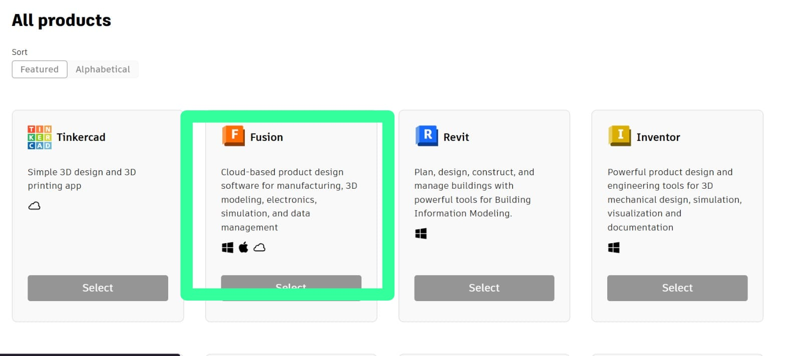
Step 4: Download Setup File
Initiate the installation by running the lightweight download assistant module on your Windows workstation.
Detailed Technical Information
The Fusion launcher downloads core program files in the background, unpacks components, updates drivers, and syncs cloud project spaces with local directories, ensuring a robust connection.
What to Click
Click the downloaded Fusion installer file.
Allow the setup assistant to start downloading required program files.
Keep the internet connection active during installation.
Wait for extraction and setup to finish.
Click Launch or open Fusion from the Start menu.
Sign in using the Autodesk account connected to the education license.
Asset Installation: Automated program extraction and background system dependency checks.
Updates: Automatically retrieves system patches to keep design modules aligned.
Image File Reference: image/Fusion4.jpeg
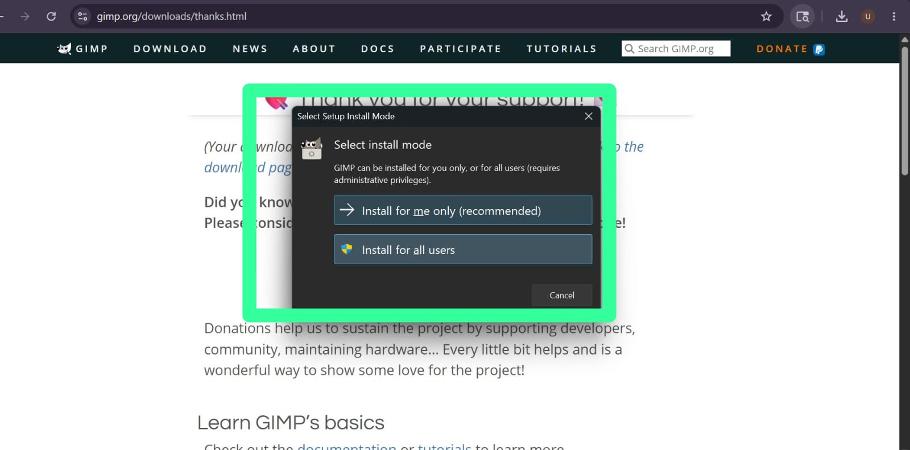
Step 5: Run Canvas Interface
Launch the app to reveal the 3D drawing canvas and toolbar layout interface where design steps begin.
Detailed Technical Information
Opening Autodesk Fusion displays a parametric layout layout. The top ribbon contains standard CAD solid and surface tools, the left browser lists model components and references, and the viewport houses the interactive grid.
What to Click and Check
Open Autodesk Fusion.
Sign in if Fusion asks for account access.
Click File > New Design to create a blank design file.
Make sure the workspace selector is set to Design.
Use the Solid tab for common modeling tools.
Check the left Browser panel for document settings, origin, sketches, and bodies.
Save the file using File > Save.
Viewport Grid: 3D coordinate space with adjustable grid lines and unit displays.
Active Workspace: Defaults to the Design workspace for drafting solid features.
Image File Reference: image/fusion5.jpeg
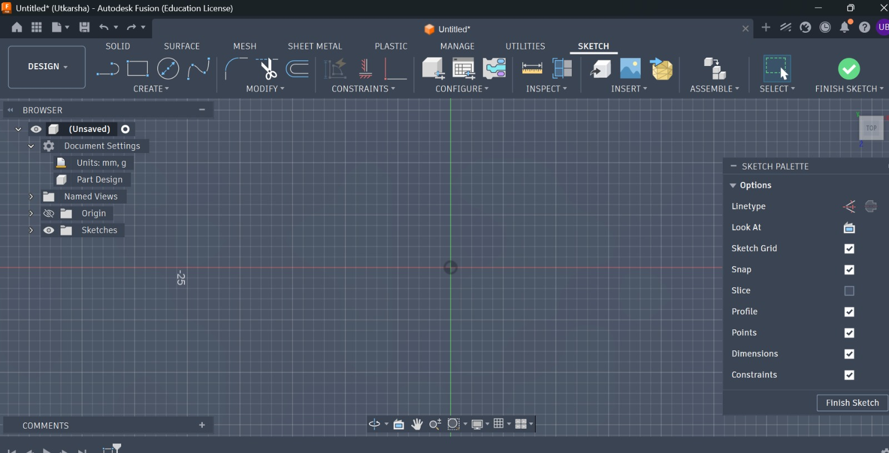
Autodesk Fusion Capabilities
Basic CAD Workflow
Click Create Sketch and select a plane.
Use sketch tools such as Line, Rectangle, Circle, or Arc.
Click Finish Sketch after closing the profile.
Use Create > Extrude to convert the 2D sketch into a 3D body.
Use Modify > Fillet to round edges.
Use Inspect > Measure to check dimensions.
Save the file before exporting or manufacturing.
Precision 3D parametric CAD solid and surface modeling
Design of complex mechanical components and multi-part assemblies
Finite Element Analysis (FEA) structural load simulations
Cloud-based version control and multi-user team collaboration
Preparing layouts for CNC machining and additive 3D printing pipelines (CAM)
4. Screen Recording & Live Broadcasting (OBS Studio)
Step 1: Open OBS Studio Homepage
Navigate to the official Open Broadcaster Software (OBS) page to locate high-performance media creation packages.
Detailed Technical Information
OBS Studio is a premiere open-source screen recording and live-streaming utility. It utilizes highly optimized graphics and encoding algorithms to capture, blend, and render audio-video signals without placing a heavy load on local CPU resources.
What to Click
Open a web browser.
Search for OBS Studio download or open the official OBS website.
Click the Windows download option.
Wait for the installer to download.
Open the downloaded installer file.
Operating System: Built for Windows, macOS, and Linux platforms.
Core Capabilities: Supports direct GPU recording, scene switching, audio mix levels, and real-time capture filters.
Image File Reference: image/obs1.jpeg
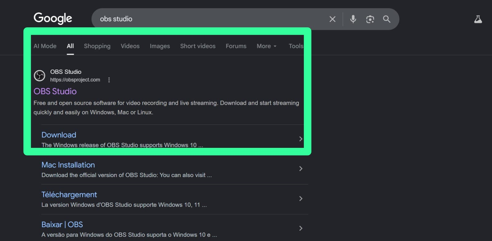
Step 2: Run OBS Setup
Install OBS Studio on your local system, making sure key video codecs and high-performance drivers are successfully updated.
Detailed Technical Information
The installation maps the main video processing modules directly to your local hardware resources. It configures standard virtual camera drivers and enables system codecs necessary for processing files.
What to Click
Double-click the OBS Studio installer.
Click Next on the setup wizard.
Accept the license agreement if prompted.
Choose the installation folder or keep the default location.
Click Install.
Click Finish and launch OBS Studio.
Use the auto-configuration wizard if OBS asks to optimize recording settings.
Installation Options: Sets up the app within standard directories, registering system hooks for screen capture.
Wizard Configuration: Features an initial auto-configuration wizard to automatically balance quality settings based on hardware performance.
Image File Reference: image/obs2.jpeg
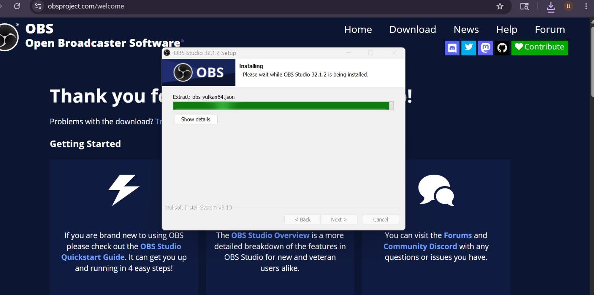
Step 3: Setup Resolution & Output Profile
Access the settings panel inside OBS to balance video resolution layers, canvas scale factors, and output folder routing paths.
Detailed Technical Information
Advanced media configurations are key to maintaining absolute capture quality. Configuring settings involves balancing resolution layers, canvas scaling ratios, format encodings, and local directory directories.
What to Click
Open OBS Studio.
Click Settings in the lower-right control panel.
Click the Video tab.
Set Base Canvas Resolution to match your screen resolution.
Set Output Scaled Resolution to the final recording resolution.
Click the Output tab and select the recording folder and file format.
Click Apply, then click OK.
Base Canvas: Match this to your screen's resolution (e.g. 1920x1080) for clear displays.
Output Scaled: Resolution of the final saved video file (scale to match screen space).
Encoding: Select standard GPU-based encoding options (like NVIDIA NVENC) to maximize performance.
File Format: Set to MP4 or MKV to ensure maximum compatibility.
Image File Reference: image/obs3.jpeg
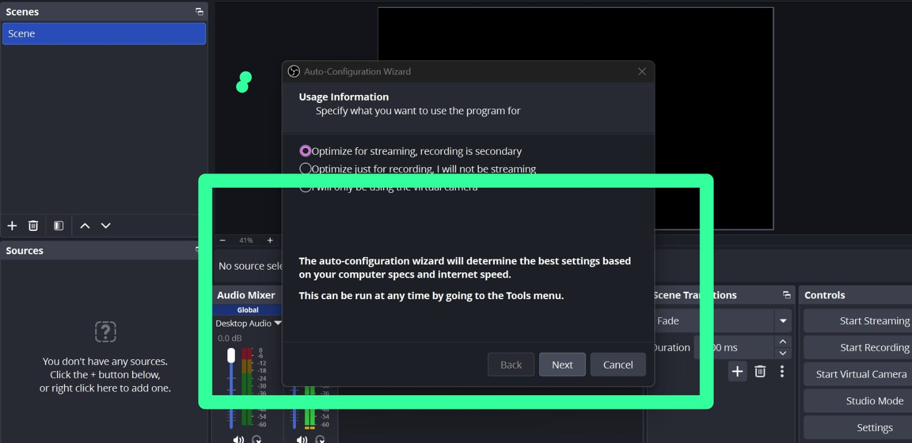
Step 4: Configure Source Scenes
Initialize sources by adding a Display Capture to map your primary monitor and a Mic Capture to route voice signals into live streams.
Detailed Technical Information
OBS Studio works with dynamic Scenes containing multiple Sources. Adding sources coordinates local video inputs, desktop screen spaces, and external hardware audio lines onto your recording layout.
What to Click and Which Source to Use
In the Scenes panel, click the + button to create a new scene.
Name the scene, such as Screen Recording, then click OK.
In the Sources panel, click the + button.
Select Display Capture to record the full screen, then click OK.
Choose the monitor display and click OK.
Click + again in Sources and select Audio Input Capture for microphone recording.
Check audio movement in the Audio Mixer.
Click Start Recording to begin and Stop Recording to finish.
Display Capture: Captures all actions on your monitor in real-time.
Audio Input Capture: Assigns your microphone to log clear voice explanations.
Audio Mixer: Balance desktop audio channels against microphone signals to prevent overlap.
Image File Reference: image/obs4.jpeg
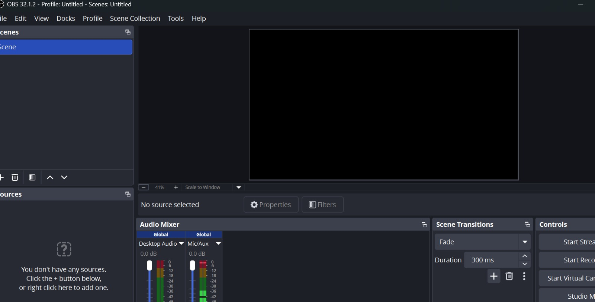
OBS Studio Applications
Simple Recording Workflow
Open OBS Studio before starting the activity you want to document.
Select the correct scene from the Scenes panel.
Confirm the display capture preview is visible.
Check microphone and desktop audio levels.
Click Start Recording.
Perform the task while explaining important steps.
Click Stop Recording and check the saved video file.
High-fidelity live video streaming directly to digital web systems
Local screen capture, development walk-throughs, and coding screencasts
Multi-source media composition (images, camera, audio, browser pages)
Broadcasting virtual webcam signals into conferencing packages
Advanced recording adjustments for custom audio channel filters
Day 3: 3D CAD Modeling Mechanics in Fusion
Customized Name Phone Stand Design
Step 1: Setup a Workspace
Open Autodesk Fusion and create a new design file, setting up the standard workspace and coordinate system for your custom model.
Detailed Technical Information
Initializing a CAD design session sets up standard parametric environments. This creates an empty coordinate workspace referenced along the origin axes (X, Y, Z), allowing you to begin drawing with precise measurements.
What to Click
Open Autodesk Fusion.
Click File > New Design to start a blank model.
Check that the workspace selector is set to Design.
Select the Solid tab from the top toolbar.
Click Document Settings in the Browser panel and confirm the units are set to millimeters.
Click File > Save and name your project Utkarsha_Phone_Stand.
Workspace Selection: Set units to metric system benchmarks (millimeters) for standard project documentation.
Parametric History: Ensure the timeline at the bottom is active to record all extrusion and sketching actions for easy modifications later.
Image File Reference: image/fusion5.jpeg
Step 2: Sketch and Extrude the Base Plate
Design a rectangular flat base plate that provides the physical foundation and stability for the phone stand.
Detailed Technical Information
The base plate serves as the center of gravity for the stand. The sketch is drawn on the ground plane and extruded vertically to create a strong, solid plate to hold the weight of a phone and the letters.
What to Click and Which Tool to Use
Click Create Sketch from the Solid toolbar.
Select the horizontal XY plane as the sketch plane.
Click Create > Rectangle > Center Rectangle.
Click the origin point and draw a rectangle measuring 120 mm in width and 75 mm in depth.
Click Finish Sketch.
Select the rectangle profile, click Create > Extrude, set the distance to 5 mm, and click OK.
Center Rectangle: Starting at the origin ensures the model remains perfectly symmetrical, making it easier to position other features.
Image File Reference: image/phone_stand_step2.svg
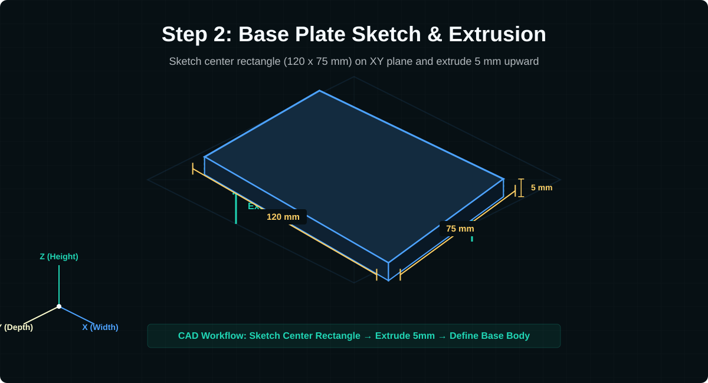
Step 3: Add Raised Base Text "BHADAKWADE"
Personalize the front of the base plate by adding raised 3D text showing the surname.
Detailed Technical Information
Text sketch geometry must be created directly on the upper face of the base plate body and extruded upward. This ensures the text and base form a single solid body when exported for 3D printing.
What to Click and Which Tool to Use
Select the top face of the extruded base plate.
Click Create Sketch.
Click Create > Text.
Draw a text box along the front margin of the base.
In the Text dialog, type BHADAKWADE, select a bold font (such as Arial Black or Impact), set the height to 8 mm, and center-align it.
Click OK and then click Finish Sketch.
Select the text profiles, click Extrude, set the distance to 2.5 mm, and click OK.
Image File Reference: image/phone_stand_step3.svg
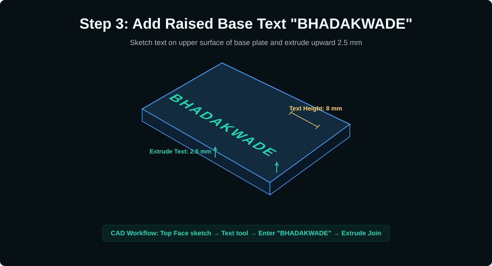
Step 4: Design the Curved Support Columns
Create the curved, wavy vertical support pillars that connect the base to the standing letters.
Detailed Technical Information
To support the weight of the phone at a stable viewing angle, we draw a curved profile on a vertical plane. Using splines allows us to model the organic, wave-like pillars that rise from the back of the base plate.
What to Click and Which Tool to Use
Click Create Sketch and select the vertical XZ plane.
Use Create > Fit Point Spline to sketch a wavy leg profile starting from the back edge of the base, curving upwards and backwards at an angle of roughly 75 degrees.
Offset or draw matching lines to define a column thickness of 6 mm.
Close the sketch profile by connecting the endpoints at the bottom and top.
Click Finish Sketch.
Select the profile, click Extrude, set the operation to New Body, and extrude it symmetrically across the width, or copy it to align with each letter's position.
Image File Reference: image/phone_stand_step4.svg
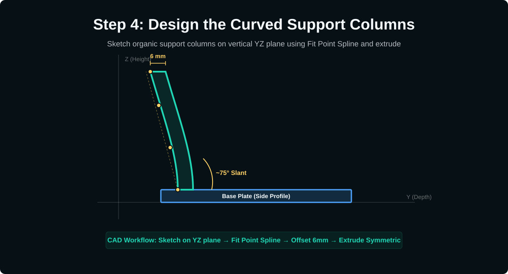
Step 5: Sketch and Extrude "UTKARSHA" Letters
Create the large standing letters "UTKARSHA" that form the back support rest of the phone stand.
Detailed Technical Information
The letters must be created on a plane tilted parallel to the support columns. Extruding them connects them structurally with the wavy pillars, resulting in a single continuous model.
What to Click and Which Tool to Use
Create an offset or construction plane aligned at the angle of the support pillars.
Click Create Sketch on this angled plane.
Select Create > Text and draw a large text box.
Type UTKARSHA in capital letters, choose a thick font style, and set the text height to 28 mm.
Click OK, then click Finish Sketch.
Select the letter profiles, click Extrude, and set the distance to 10 mm, ensuring they overlap and join the support columns.
Image File Reference: image/phone_stand_step5.svg
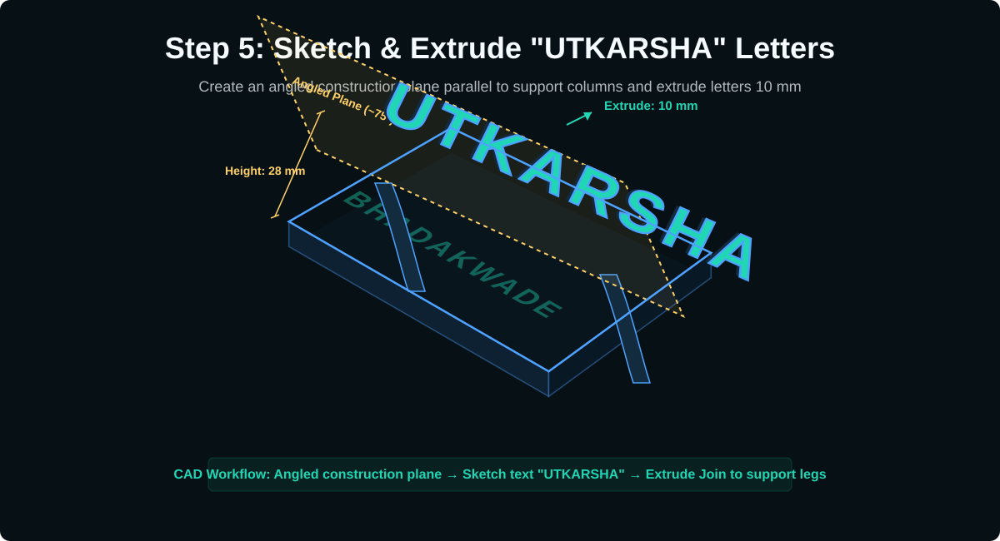
Step 6: Apply Fillets, Appearance, and Export STL
Smooth out the sharp edges of the 3D model for comfort, apply a custom purple appearance, and prepare the design file for slicing.
Detailed Technical Information
Adding fillets reduces stress concentration areas at the intersections of the letters and base plate, significantly increasing the structural strength of the 3D print. The appearance tool allows you to visualize materials before exporting the design mesh.
What to Click and Which Tool to Use
Click Modify > Fillet.
Select the sharp intersections where the letters join the pillars and base plate, enter a radius of 2 mm, and click OK.
Press A on the keyboard to open the Appearance panel.
Search for a glossy or matte plastic material, drag it onto the model, and double-click to customize the color to lavender/purple.
Right-click the main model body in the Browser panel, select Save as Mesh, set the format to STL (Binary) or 3MF, and save the print file.
Used to sketch the organic, wavy vertical pillars supporting the standing text.
2. Construction Plane
Created at an angle to allow sketching and extruding the standing text parallel to the support columns.
3. Text Tool
Allows adding exact alphanumeric profiles for custom labels, base engravings, or standing features.
4. Fillet
Smooths sharp intersections, strengthening critical stress joints between letters and plates.
Day 4: 3D Printing Mechanics & Slicing Workflows
1. Characterization of 3D Printer H2D (Bambu Lab)
System Architecture & Specifications
The Bambu Lab H2D represents a state-of-the-art desktop Fused Deposition Modeling (FDM) 3D printer engineered for exceptional dimensional stability, high volume throughput, and professional-grade materials fabrication.
Extruder Assembly: Highly integrated direct-drive extruder with dual-hardened steel gears, offering massive torque for abrasive materials.
Thermal Thresholds: All-metal hotend supporting temperatures up to 300°C, and a high-efficiency magnetic heated print bed operating up to 110°C.
Build Volume Capacity: 256mm x 256mm x 256mm build coordinate cube, fully enclosed to prevent print warping.
Calibration Suite: Micro-Lidar bed scan, auto-resonance frequency tuning (active vibration compensation), dynamic flow-rate calibration, and continuous bed leveling.
High-speed FDM operations require robust structural rigidity and dynamic dampening to prevent ringing, ghosting, and layer shifts in finished parts.
Core Engineering Mechanics
Unlike standard Cartesian systems where the heavy build plate moves along the Y-axis, the CoreXY layout keeps the bed fixed along X/Y axes (moving only vertically in Z). Dual stepper motors run in coordination to glide the ultra-light carbon-fiber rail toolhead across the X/Y axes. The system runs an automated input shaping calibration routine that maps internal accelerometers to compensate for high-speed inertia vibration.
Active Resonance Compensation: Dynamically calculates acceleration adjustments in real-time.
Dual-Gear Direct Drive: Positions the extruder directly above the hotend, enabling highly responsive filament retraction controls essential for flexible materials (like TPU).
Flexible PEI Build Plate: Magnetic spring-steel base sheet with textured polyetherimide (PEI) coating, ensuring high print adhesion when hot and easy parts release when cool.
Bambu Studio is a highly optimized, open-source slicing platform that translates solid 3D digital geometries (STL, OBJ, or 3MF formats) into layered toolpaths and instructions (G-code commands) that the printer can execute step-by-step.
Detailed Technical Workflow
The slicer acts as the brain of the printing process, dividing a complex solid model into thin horizontal cross-sections. Developers configure layer settings, infill patterns, cooling profiles, and support structures to tune structural strength, surface finish, and print speed.
Layer Height Control: Defines the height of each toolpath layer. Standard profiles balance speeds at 0.20mm, while high-detail curves are printed at 0.12mm or 0.08mm.
Infill Patterns: Solidifies internal structures without wasting plastic. Advanced infills like Gyroid provide uniform strength in all three dimensions and prevent nozzle collisions during high-speed printing.
Material Temperature Profiles: Controls exact extrusion temperature settings (such as 220°C for PLA or 255°C for PETG) to ensure optimal inter-layer adhesion.
FDM technology cannot extrude material into thin air; therefore, overhangs exceeding 45 degrees require temporary support structures to hold the layers in place during printing.
Advanced Slicing Parameters
Tree (Organic) Supports: Generates beautiful, branching support columns that taper down to touch the model only where necessary. This significantly reduces print time, saves filament, and leaves minimal cosmetic scarring upon removal.
Wall Loops: Defines the thickness of the model's outer shell boundary layers. Increasing loops directly boosts overall structural strength far more effectively than adding solid internal infill.
Cooling Controls: Dictates the speed of auxiliary part cooling fans. Precise cooling is critical: fast fan speeds prevent plastic sagging on overhangs, while slower cooling ensures strong layer fusion in engineering-grade plastics.
3. Quality Verification & Diagnostic Benchmarking
The 3DBenchy Benchmark Model Boat
The 3DBenchy is a highly structured, open-source 3D model boat designed specifically to stress-test a 3D printer's performance, physical limits, and dimensional calibration accuracy across multiple geometries.
Core Diagnostic Tests Evaluated
Bridging Capability: The horizontal bridge on the cabin roof tests the printer's cooling speed and extrusion precision when spanning empty space.
Overhang Angles: The curved bow of the ship tests toolhead pathing and fan cooling limits on steep angles without structural support.
Surface Quality: The vertical round chimney diagnostic tube evaluates roundness accuracy, seam placement settings, and surface shifts.
Dimensional Precision: Multiple defined measurements (such as the tiny rear cargo box and thin deck windows) verify coordinate scale accuracy.
High-Speed Retraction: The open cabin window panels evaluate the extruder's retraction performance, revealing any stringing or oozing issues.
Week 2 Day 1: CO2 Laser Cutting Machine
1. CO2 Laser Cutting Machine
Introduction to Laser Cutting
Laser cutting is a digital fabrication process where a highly focused laser beam is used to cut, engrave, or mark materials with high precision. In our lab, the laser cutter used is a CO2-based laser cutting machine, which is commonly used for non-metal materials such as acrylic, MDF, cardboard, paper, leather, and similar sheet materials.
Detailed Technical Information
A CO2 laser cutter generates infrared laser energy inside a sealed CO2 laser tube. This beam is reflected through mirrors, focused through a lens, and directed onto the material surface. The focused heat vaporizes or burns the material along the programmed path, producing accurate cuts or engraved markings.
Machine Type: CO2 laser cutting and engraving system
Common Operations: Cutting, engraving, scanning, marking, and prototyping
Output Control: Speed and power settings are adjusted according to material type and thickness
The laser cutter follows a digital file to cut or engrave the material. The design is first prepared in vector software, then imported into the machine software where speed, power, and mode are configured before starting the job.
Step-by-Step Workflow
Create or import a 2D vector design using software such as CorelDRAW, Inkscape, AutoCAD, or similar design tools.
Set the correct line colors or layer settings for cutting and engraving operations.
Place the material flat on the laser cutter bed and adjust the focus distance between the lens and material surface.
Set speed and power values according to material thickness and operation mode.
Start the chiller first, switch on exhaust ventilation, close the lid, and then run the laser job safely.
Laser cutting uses heat, smoke, and moving mechanical parts, so safety checks are required before every job. The chiller should be started before the laser machine, and the chiller water should be changed regularly as instructed for the machine.
Safety Checklist
Chiller: Start the chiller before operating the laser machine to protect the CO2 tube from overheating.
Ventilation: Use the exhaust system to remove smoke and fumes during cutting or engraving.
Fire Safety: Never leave the machine unattended while cutting flammable materials like paper, cardboard, MDF, or acrylic.
Focus: Correct focusing improves cutting quality and reduces burning at the edges.
Material Check: Avoid unsafe plastics such as PVC because they release toxic gases and can damage the machine.
3. Material Settings Reference
Speed, Power, and Mode Settings
The reference chart shows approximate speed and power values for cutting and engraving different materials. These settings should be treated as starting values because final results depend on laser wattage, lens condition, material quality, and focus accuracy.
Observed Settings from Reference Chart
Acrylic Cutting: Thicker acrylic needs lower speed and higher power. For example, 2 mm acrylic uses higher speed than 18 mm acrylic.
Acrylic Engraving: Uses scan mode with very high speed and lower power compared to cutting.
MDF Cutting: Requires moderate speed with higher power because wood-based sheets are denser than paper or cardboard.
Paper and Cardboard Cutting: Uses lower power compared to thick acrylic or MDF to avoid excessive burning.
Thermocol Cutting: Needs careful control because it melts easily under heat.
Image File Reference: image/user_laser_chart.png
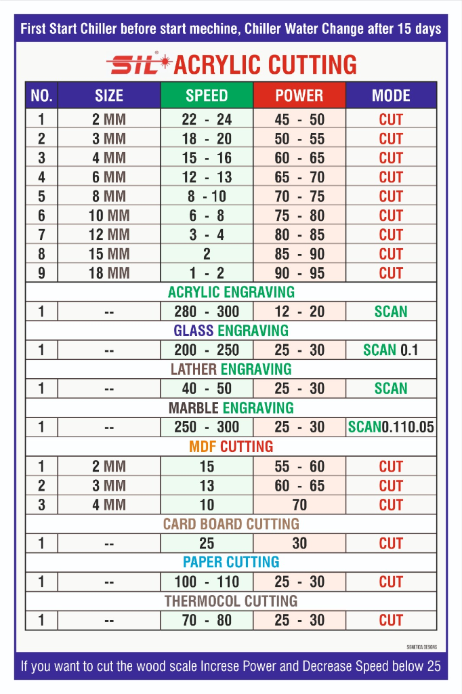
Laser Cutting Applications
Rapid prototyping of acrylic and MDF models
Precision cutting for enclosures, panels, gears, and flat assemblies
Engraving logos, labels, decorative patterns, and surface markings
Making press-fit construction kits and architectural models
Preparing clean 2D parts for product design and fabrication projects
The aim of this task was to design a customized mobile phone stand in Autodesk Fusion. The model includes a rectangular base plate, front holding lip, curved back support, raised personal name text, and a decorative vertical name feature behind the stand.
Model Features
Software Used: Autodesk Fusion
Workspace: Design workspace using the Solid tab
Main Tools: Create Sketch, Rectangle, Line, Arc, Extrude, Text, Fillet, Move/Copy, and Appearance
Output: A 3D phone stand prototype suitable for visualization and further fabrication planning
Text was added to personalize the stand and make the design identifiable. The model shows raised name text on the base and larger text behind the support.
What to Click and Which Tool to Use
Select the base top face and click Create Sketch.
Click Create > Text.
Click on the base where the name should appear.
Type the required text, adjust height, alignment, and font style, then click OK.
Click Finish Sketch.
Select the text profiles and click Create > Extrude.
Use a positive extrusion value for raised text or a negative value for engraved text.
Repeat the same process on the rear support area for the large vertical name text.
Used to draw the 2D base, lip, support profile, and text layout before making 3D forms.
Extrude
Converted flat sketch profiles into solid 3D bodies with thickness and height.
Text
Added custom name text to personalize the phone stand model.
Fillet
Rounded sharp edges to make the model smoother and more polished.
Week 2 Day 3: Vinyl Cutter and Cricut
1. Vinyl Cutting Overview
What is a Vinyl Cutter?
A vinyl cutter is a digital fabrication machine used to cut thin sheet materials such as adhesive vinyl, heat transfer vinyl, sticker sheets, paper, and cardstock. Unlike a laser cutter, it does not burn or melt material. Instead, it uses a small sharp blade to physically trace the design path and cut the top layer of the sheet.
Explanation
The machine follows vector paths from a digital design file. The blade moves across the material while the roller moves the sheet forward and backward. Together, these movements allow the cutter to create accurate shapes, letters, logos, labels, and decorative stickers.
Input Design: Vector artwork, text, shapes, or logo outlines.
Cutting Method: A fine blade applies controlled pressure to cut the material surface.
Common Output: Stickers, decals, labels, signage, stencils, and heat-transfer designs.
Cricut as a Vinyl Cutting Machine
Cricut is a popular desktop cutting machine used for craft, design, and prototyping work. It is commonly used to cut vinyl sheets and other thin materials with high precision. Cricut machines are controlled through design software where the user imports or creates artwork, sets the material type, and sends the job to the cutter.
Explanation
In Cricut-based vinyl cutting, the design is prepared in the software, placed on a virtual cutting mat, and then transferred to the physical machine. The material is fixed onto a sticky mat so it does not move during cutting. The blade then follows the design outline and cuts only the required areas.
Design Software: Used to arrange text, shapes, and imported artwork before cutting.
Cutting Mat: Holds vinyl or paper flat during the cutting process.
Fine-Point Blade: Cuts thin materials accurately for stickers and decals.
2. Main Parts and Working Principle
Main Parts of a Vinyl Cutter
Important Components
Blade Holder: Holds the cutting blade and controls how deeply it cuts into the vinyl.
Cutting Blade: A sharp small blade that follows the design path and cuts the material.
Rollers: Feed the material forward and backward while keeping it aligned.
Cutting Mat: Supports and grips the vinyl sheet during cutting.
Carriage: Moves the blade side to side across the cutting area.
Control Software: Sends vector design instructions to the machine.
How Vinyl Cutting Works
The vinyl cutting process starts with a digital vector design. The machine reads the design as paths instead of pixels. These paths tell the blade where to move and where to cut. The cutter then applies the selected blade pressure, moves along the design outline, and creates the cut shape on the vinyl surface.
Working Principle
The design is prepared as clean vector paths.
The vinyl sheet is attached to a cutting mat.
The machine detects or loads the mat into position.
The blade moves according to the design path.
Unwanted vinyl is removed through a process called weeding.
Transfer tape is used to lift and apply the final sticker or decal.
3. Materials, Uses, and Safety
Materials Used
Vinyl cutters are best suited for thin and flexible sheet materials. The correct blade pressure and material setting are important because too much pressure may cut through the backing sheet, while too little pressure may leave the vinyl uncut.
Common Materials
Adhesive Vinyl: Used for stickers, labels, wall art, and decals.
Heat Transfer Vinyl: Used for fabric printing on T-shirts, bags, and cloth products.
Cardstock: Used for paper craft, cards, and decorative layouts.
Stencil Sheets: Used for painting guides and repeated pattern work.
Applications and Advantages
Vinyl cutting is useful for fast, clean, and low-cost customization. It is especially helpful for branding, labeling, craft work, and making precise flat graphics without using ink or laser heat.
Applications
Making custom stickers and decals
Creating labels for projects and lab equipment
Designing T-shirt graphics using heat transfer vinyl
Producing signage, wall graphics, and name tags
Preparing stencils for painting or surface marking
Safety and Care
Vinyl cutters are safer than laser cutters because they do not produce fumes from burning material, but care is still needed. The blade is sharp, the mat must be loaded correctly, and the machine should not be forced while it is moving.
Care Points
Keep fingers away from the blade holder and moving carriage.
Use the correct material setting before cutting.
Make sure the vinyl is flat and properly attached to the mat.
Replace dull blades to avoid tearing or incomplete cuts.
Clean the cutting mat gently so it keeps enough grip for future work.
Week 2 Day 4: Arduino IDE Setup
1. Arduino IDE Installation
Step 1: Open the Arduino Website
Arduino IDE is the software used to write, compile, and upload programs to Arduino boards. To begin setup, open the official Arduino website and go to the software download section.
What to Click
Open a web browser such as Chrome, Edge, or Firefox.
Search for Arduino IDE download.
Open the official Arduino website.
Go to the Software or Downloads section.
Select the installer for your operating system, such as Windows.
After selecting the correct operating system, download the Arduino IDE installer file. The installer prepares the editor, compiler tools, serial monitor, and board support files needed for Arduino programming.
What to Click
Click the correct download option for your computer.
If a donation page appears, choose the available download option to continue.
Wait for the installer file to finish downloading.
Open the downloaded file from the browser download bar or Downloads folder.
Run the setup wizard and complete the installation. During installation, allow required drivers if the system asks for permission, because these drivers help the computer communicate with Arduino boards through USB.
What to Click
Click I Agree or accept the license agreement.
Keep the recommended installation components selected.
Choose the installation location or keep the default folder.
Click Install.
Allow USB driver installation if Windows asks for confirmation.
Connect the Arduino board to the computer using a USB cable. A proper data cable is needed because some USB cables only support charging and cannot upload programs.
What to Click
Connect the Arduino board using a USB cable.
In Arduino IDE, open the Tools menu.
Select Board and choose your board, such as Arduino Uno.
Select Port and choose the port where the Arduino is connected.
If no port appears, reconnect the board or check the USB cable and driver installation.
The Blink program is the first basic Arduino test. It turns the built-in LED on and off, confirming that the IDE, USB connection, selected board, and selected port are working correctly.
What to Click
Open File.
Select Examples.
Open 01.Basics.
Click Blink.
Click the Verify button to compile the code.
Click the Upload button to send it to the Arduino board.
Physical AI means combining artificial intelligence or programmed decision-making with real-world hardware. Instead of only processing data on a screen, a Physical AI system senses the environment, makes a decision, and performs an action through physical components.
Three Main Parts
Sensor: Detects information from the environment, such as light, distance, temperature, sound, touch, motion, or gas.
Control System: Processes sensor data and decides what should happen next. This is usually done by a microcontroller such as Arduino or ESP32.
Actuator: Performs the physical output action, such as moving a motor, switching a light, sounding a buzzer, or opening a valve.
Image File Reference: image/physical_ai_flow.svg
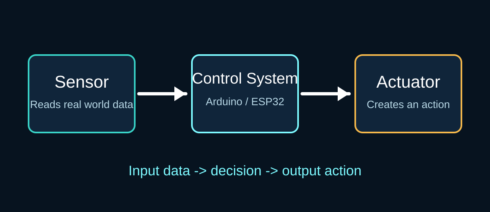
Example Working Flow
A simple Physical AI example is an automatic light system. A light sensor detects darkness, the microcontroller reads the value and compares it with a threshold, and the actuator turns on an LED or relay-controlled lamp.
Flow Explanation
Input: A sensor collects data from the real world.
Processing: A control system reads the data and runs logic or AI-based decision rules.
Output: An actuator responds by creating movement, light, sound, heat, or another physical action.
2. Sensors and Actuators
Types of Sensors
Sensors are input devices that convert real-world changes into electrical signals. They help the system understand what is happening around it.
Passive and Active Sensors
Passive Sensors: Detect naturally available energy from the environment without transmitting their own signal. Examples include LDR light sensors, thermistors, and passive infrared motion sensors.
Active Sensors: Emit energy or a signal and measure the response. Examples include ultrasonic sensors, IR obstacle sensors, LiDAR sensors, and radar sensors.
Actuators are output devices that convert electrical signals into physical action. They are used when the system needs to move, rotate, push, pull, vibrate, switch, or produce a visible or audible output.
Common Actuators
LED: Produces light as an output signal.
Buzzer: Produces sound for alarms or alerts.
Relay: Acts as an electrically controlled switch for higher-power devices.
Solenoid: Creates linear push-pull motion.
Motor: Produces rotational movement.
Types of Motors
DC Motor: Rotates continuously and is commonly used in wheels, fans, and simple motion systems.
Servo Motor: Rotates to a specific angle and is useful for robotic arms, steering systems, and controlled movement.
Stepper Motor: Moves in accurate step increments and is used in 3D printers, CNC machines, and precise positioning systems.
Brushless DC Motor: Efficient high-speed motor often used in drones and advanced robotics.
Difference Between Microcontroller and Microprocessor
Microcontrollers and microprocessors are both computing devices, but they are designed for different purposes. A microcontroller is usually used to control hardware directly, while a microprocessor is used for more complex computing tasks.
Comparison
Microcontroller: Has CPU, memory, and input-output pins built into one chip. It is used for embedded control projects such as sensor reading, motor control, automation, and robotics.
Microprocessor: Mainly contains the CPU and needs external memory, storage, and input-output circuits. It is used in computers, laptops, phones, and advanced processing systems.
Power Use: Microcontrollers usually consume less power than microprocessors.
Cost: Microcontrollers are usually cheaper and simpler for hardware projects.
Examples: Arduino boards and ESP32 are microcontroller-based. Raspberry Pi and computer CPUs are microprocessor-based systems.
Arduino Uno is one of the most commonly used beginner microcontroller boards. It is easy to program, has digital and analog pins, and is widely used for basic electronics, sensors, actuators, and prototype projects.
Key Points
Good for beginners and classroom projects.
Works well with simple sensors, LEDs, buzzers, relays, and motors.
Uses the ATmega328P microcontroller.
Programmed through Arduino IDE using USB connection.
Arduino Nano is a compact version of Arduino that is useful when the project needs a smaller board size. It can perform many of the same basic tasks as an Uno, but it fits better into small enclosures and compact prototypes.
Key Points
Small and breadboard-friendly.
Useful for compact sensor and actuator projects.
Often used in wearable, portable, and space-saving designs.
Arduino Mega is used for larger projects that need more pins, more memory, and more connected modules. It is suitable for complex robotics, automation, multi-sensor systems, and projects with many motors or displays.
Key Points
Provides many more digital and analog pins than Arduino Uno.
Useful for projects with multiple sensors and actuators.
Uses the ATmega2560 microcontroller.
Good for robotics, control panels, and larger embedded systems.
ESP32 is a powerful microcontroller board with built-in Wi-Fi and Bluetooth. It is commonly used for IoT projects, wireless sensor systems, smart devices, automation, and connected robotics.
Key Points
Built-in Wi-Fi and Bluetooth connectivity.
Faster and more powerful than basic Arduino boards.
Useful for IoT and cloud-connected projects.
Can be programmed using Arduino IDE or other ESP32 development tools.
Image File Reference: image/esp32_pinout.svg
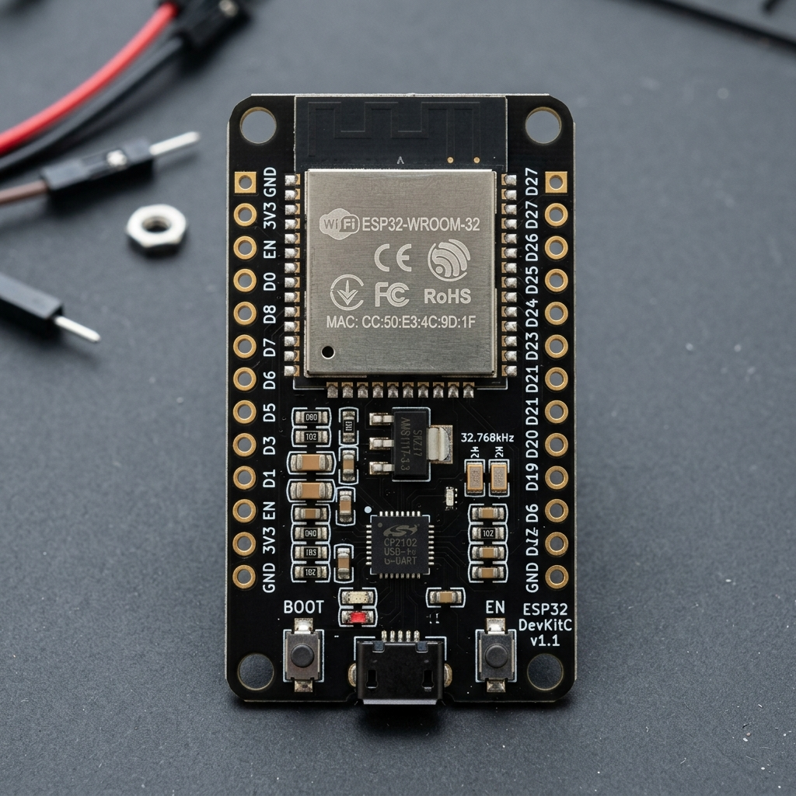
Week 4 Day 2: IoT Board Selection & Cloud Connectivity
1. Choose an IoT Board
IoT Board Overview
ESP32 is a powerful and cost-effective board with built-in Wi-Fi and Bluetooth, which makes it ideal for connected projects that send sensor data to apps or dashboards.
Common IoT Board Choices
Arduino Uno: Great for learning Arduino programming, but wireless connectivity requires additional modules.
Arduino Nano 33 IoT: A compact board with built-in Wi-Fi and Bluetooth for small form-factor projects.
ESP32: Built-in Wi-Fi/Bluetooth makes it the preferred choice for smart devices, remote sensors, and cloud-enabled systems.
Use the Arduino IDE to create a sketch that includes the Wi-Fi library and board-specific settings. Establishing network connectivity is the first step toward remote monitoring and cloud control.
What to Check
Select the correct board under Tools > Board.
Install the ESP32 or Nano IoT board package if it is not already available.
Choose the correct COM port under Tools > Port.
Add your Wi-Fi SSID and password in the sketch before uploading.
Once the board is connected to the network, you can send sensor readings to a cloud service or dashboard. This makes your session project accessible from anywhere and helps visualize real-time data.
Example Uses
Send temperature and humidity readings to a web dashboard.
Log motion or light sensor data to a cloud database.
Control outputs such as LEDs or relays from a remote app.
Add your session details here. This section is reserved for session-specific information separate from the weekly day content.
How to Use
Enter session objectives and outcomes.
Document tools, steps, and observations.
Use this space for any additional session notes or images.
Week 3 Day 2: Arduino Uno Board and Pin Details
1. Arduino Uno Overview
Brief Information
Arduino Uno is a beginner-friendly microcontroller development board based on the ATmega328P. It is used to build electronics projects by reading inputs from sensors and controlling outputs such as LEDs, buzzers, relays, displays, and motors.
Main Specifications
Microcontroller: ATmega328P
Operating Voltage: 5V
Recommended Input Voltage: 7V to 12V through barrel jack or VIN
Digital I/O Pins: 14 pins, numbered 0 to 13
PWM Pins: 6 pins, marked with ~ on pins 3, 5, 6, 9, 10, and 11
Analog Input Pins: 6 pins, A0 to A5
Flash Memory: 32 KB, with part used by the bootloader
The power pins provide regulated voltage, external input voltage, ground reference, and reset control. These pins are important because every sensor and module needs correct voltage and common ground to work safely.
Pin
Type
Use
Important Detail
VIN
Power Input
External voltage input
Used when powering the board from an external supply instead of USB.
5V
Power Output
Supplies 5V to modules
Used for 5V sensors, LEDs, display modules, and breadboard circuits.
3.3V
Power Output
Supplies 3.3V to low-voltage modules
Useful for some wireless modules and sensors that cannot take 5V.
GND
Ground
Common negative reference
All connected components must share GND with Arduino for signals to work.
RESET
Control
Restarts the board
Pulling this pin LOW resets the ATmega328P and restarts the uploaded program.
IOREF
Reference
Shows board logic voltage
Helps shields know that the Uno operates at 5V logic.
Digital pins read or write two states: HIGH and LOW. HIGH usually means 5V and LOW means 0V. These pins are used for LEDs, buttons, buzzers, relays, digital sensors, and communication modules.
Pin
Main Use
Special Function
Example Use
0
Digital I/O
RX serial receive
Receives serial data from USB or another device.
1
Digital I/O
TX serial transmit
Sends serial data to USB or another device.
2
Digital I/O
External interrupt
Button interrupt, encoder signal, fast sensor trigger.
3
Digital I/O
PWM and external interrupt
LED brightness control, motor speed control, interrupt input.
4
Digital I/O
General purpose
Relay control, LED output, digital sensor input.
5
Digital I/O
PWM
Servo signal, LED dimming, motor speed signal.
6
Digital I/O
PWM
LED brightness or motor speed output.
7
Digital I/O
General purpose
Button input, buzzer output, module control pin.
8
Digital I/O
General purpose
Trigger pin for ultrasonic sensor or relay module.
9
Digital I/O
PWM
Servo motor control or LED dimming.
10
Digital I/O
PWM and SPI SS
SPI chip select, motor control, LED dimming.
11
Digital I/O
PWM and SPI MOSI
Sends SPI data to displays, SD card modules, or sensors.
12
Digital I/O
SPI MISO
Receives SPI data from modules.
13
Digital I/O
SPI SCK and built-in LED
Clock signal for SPI and testing with onboard LED.
Important Notes
Pins 0 and 1 are used for serial communication, so avoid using them for normal I/O while uploading code or using Serial Monitor.
Pins marked with ~ support PWM, which creates analog-like output using fast ON/OFF pulses.
Pin 13 is connected to the built-in LED, so it is useful for the first Blink test.
Analog pins read changing voltage values from sensors. The Arduino Uno converts analog voltage between 0V and 5V into digital values from 0 to 1023 using its 10-bit analog-to-digital converter.
Pin
Main Use
Special Function
Example Sensor
A0
Analog input
Can also be digital pin 14
Potentiometer, LDR, soil moisture sensor.
A1
Analog input
Can also be digital pin 15
Temperature sensor, analog joystick axis.
A2
Analog input
Can also be digital pin 16
Gas sensor, sound sensor analog output.
A3
Analog input
Can also be digital pin 17
Pressure sensor or variable resistor input.
A4
Analog input
I2C SDA
I2C data line for LCD, OLED, RTC, and sensors.
A5
Analog input
I2C SCL
I2C clock line for LCD, OLED, RTC, and sensors.
AREF
Analog reference
External ADC reference voltage
Used when analog readings need a custom reference voltage.
Arduino Uno supports serial, I2C, and SPI communication. These communication pins allow the board to exchange data with displays, sensors, memory modules, wireless modules, and other microcontrollers.
Protocol
Pins
Purpose
Common Modules
UART Serial
0 RX, 1 TX
USB serial communication and device-to-device serial data.
Bluetooth module, GPS module, Serial Monitor.
I2C
A4 SDA, A5 SCL
Two-wire communication using data and clock lines.
I2C LCD, OLED display, RTC module, MPU6050.
SPI
10 SS, 11 MOSI, 12 MISO, 13 SCK
Fast four-wire communication with chip-select control.
SD card module, RFID reader, TFT display.
ICSP Header
MISO, VCC, SCK, MOSI, RESET, GND
Programming and SPI access through the 6-pin header.
Arduino Mega is a microcontroller board based on the ATmega2560. It is used for projects that need more input/output pins, more memory, and more control than an Arduino Uno.
Arduino Mega has many pins, so it is useful when a project needs several sensors, displays, motors, or communication modules connected at the same time.
Pin Group
Pin Numbers
Use
Example
Digital I/O
0 to 53
Input or output for digital signals
LEDs, buttons, relays, buzzers
PWM
2 to 13, 44 to 46
Analog-like output using fast ON/OFF pulses
LED brightness, motor speed
Analog Input
A0 to A15
Reads variable voltage from sensors
Potentiometer, LDR, temperature sensor
Serial 0
0 RX, 1 TX
USB serial communication
Serial Monitor, uploading programs
Serial 1
19 RX, 18 TX
Extra serial communication
Bluetooth or GPS module
Serial 2
17 RX, 16 TX
Extra serial communication
Communication with another board
Serial 3
15 RX, 14 TX
Extra serial communication
Wireless or sensor module
I2C
20 SDA, 21 SCL
Two-wire communication
I2C LCD, OLED, RTC, MPU6050
SPI
50 MISO, 51 MOSI, 52 SCK, 53 SS
Fast communication with modules
SD card, RFID, TFT display
External Interrupts
2, 3, 18, 19, 20, 21
Reads sudden signal changes quickly
Encoder, button interrupt, sensor trigger
Power Pins
5V, 3.3V, VIN, GND
Power supply and common ground
Powering sensors and modules
Control Pins
RESET, AREF, IOREF
Reset and reference voltage functions
Restart board, analog reference
Simple Pin Notes
Pins 0 and 1 are used for USB serial communication, so avoid using them for normal components while uploading code.
Pins marked as PWM are useful for controlling brightness and motor speed.
All external modules must share GND with Arduino Mega.
Use motor drivers or relay modules for high-current devices instead of connecting them directly to pins.
Arduino Mega is useful for bigger electronics projects such as robotics, automation systems, 3D printers, sensor networks, and projects with many motors, LEDs, displays, or sensors.
Key Points
It is like a larger and more powerful version of Arduino Uno.
It is helpful when a project needs many connections.
It supports multiple sensors and modules at the same time.
It can control complex circuits with motors, displays, and communication modules.
Arduino Nano is a small microcontroller board based on the ATmega328P. It works like an Arduino Uno but has a compact size, so it is useful for small projects, breadboard circuits, and prototypes with limited space.
Main Specifications
Microcontroller: ATmega328P
Digital I/O Pins: 14 pins, numbered D0 to D13
PWM Pins: 6 pins, D3, D5, D6, D9, D10, and D11
Analog Input Pins: 8 pins, A0 to A7
Operating Voltage: 5V
Input Voltage: 7V to 12V recommended through VIN
Flash Memory: 32 KB
SRAM: 2 KB
EEPROM: 1 KB
Clock Speed: 16 MHz
Programming Software: Arduino IDE
Computer Connection: Mini USB or USB cable, depending on board version
Arduino Nano is commonly used in compact electronics projects, wearable devices, mini robots, small sensor systems, automation models, and breadboard-based experiments.
Key Points
It is small and easy to place on a breadboard.
It is useful when the project has limited space.
It can be programmed using Arduino IDE.
It is suitable for sensors, LEDs, buzzers, small motors, and display modules.
ESP32 is a powerful microcontroller board with built-in Wi-Fi and Bluetooth. It is used for IoT projects, wireless sensors, automation systems, smart devices, robotics, and projects that need internet connectivity.
Main Specifications
Microcontroller: ESP32 dual-core processor
Operating Voltage: 3.3V logic level
Input Voltage: Common development boards can be powered through USB or VIN/5V pin
Digital GPIO Pins: Around 30 usable pins, depending on board version
ADC Pins: Multiple analog input pins with 12-bit ADC
DAC Pins: GPIO25 and GPIO26
PWM: Supported on most output-capable GPIO pins
Communication: UART, I2C, SPI, Wi-Fi, and Bluetooth
Programming Software: Arduino IDE, ESP-IDF, or other ESP32 tools
Important Note: ESP32 pins are not 5V tolerant, so use 3.3V signals.
Image File Reference: image/esp32_pinout.svg
2. ESP32 Pin Information
Important Pin Groups
ESP32 has flexible GPIO pins. Many pins can perform more than one function, such as digital input/output, PWM, touch sensing, ADC, SPI, I2C, or UART communication.
Pin Group
Pin Numbers
Use
Example
Digital GPIO
GPIO0 to GPIO39
General input/output pins, but not all are safe for every use
LEDs, relays, buttons, sensors
Input Only
GPIO34, GPIO35, GPIO36, GPIO39
Can read input but cannot give output
Analog sensors, switches
ADC1
GPIO32, GPIO33, GPIO34, GPIO35, GPIO36, GPIO39
Analog input pins that work well even with Wi-Fi
Potentiometer, LDR, soil moisture sensor
ADC2
GPIO0, GPIO2, GPIO4, GPIO12 to GPIO15, GPIO25 to GPIO27
Analog input pins, but can conflict with Wi-Fi
Analog sensors without Wi-Fi use
DAC
GPIO25, GPIO26
Analog voltage output
Audio signal, waveform output
PWM
Most output GPIO pins
Controls brightness or speed using pulses
LED dimming, motor speed, servo signal
Touch Pins
GPIO0, GPIO2, GPIO4, GPIO12 to GPIO15, GPIO27, GPIO32, GPIO33
Capacitive touch input
Touch button, touch slider
I2C Default
GPIO21 SDA, GPIO22 SCL
Two-wire communication
OLED, I2C LCD, RTC, MPU6050
SPI Default
GPIO18 SCK, GPIO19 MISO, GPIO23 MOSI, GPIO5 CS
Fast communication with modules
SD card, RFID, TFT display
UART0
GPIO3 RX0, GPIO1 TX0
USB serial programming and Serial Monitor
Uploading code, debugging
UART2
GPIO16 RX2, GPIO17 TX2
Extra serial communication
GPS, Bluetooth serial module
Boot Pins
GPIO0, GPIO2, GPIO12, GPIO15
Affect startup mode if pulled incorrectly
Use carefully with external circuits
Power Pins
3V3, VIN/5V, GND
Power supply and common ground
Powering sensors and modules
Control Pins
EN, BOOT
Reset and boot/programming control
Restart board, upload mode
Image File Reference: image/esp32_pinout.svg
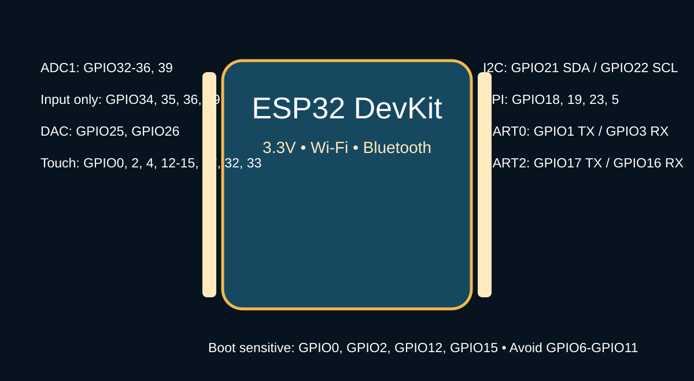
3. Each Common ESP32 Pin
Pin-by-Pin Use
The table below explains common ESP32 DevKit pins. Exact labels can change slightly by board, so always compare with the pinout diagram printed for your board.
Pin
Main Function
Use / Note
GPIO0
GPIO, ADC2, touch, boot
Used for boot mode; avoid pulling LOW during normal startup.
GPIO1
TX0
USB serial transmit; used for programming and Serial Monitor.
GPIO2
GPIO, ADC2, touch, boot
Can be used for output, but must be handled carefully during boot.
GPIO3
RX0
USB serial receive; used for programming and Serial Monitor.
GPIO4
GPIO, ADC2, touch
Useful for sensors, LEDs, and touch input.
GPIO5
GPIO, SPI CS
Common SPI chip-select pin for modules.
GPIO12
GPIO, ADC2, touch, boot
Boot-sensitive pin; use carefully with external pull-up or pull-down circuits.
GPIO13
GPIO, ADC2, touch
General input/output, PWM, or touch input.
GPIO14
GPIO, ADC2, touch
General input/output and SPI-related use on some boards.
GPIO15
GPIO, ADC2, touch, boot
Boot-sensitive pin; use carefully.
GPIO16
RX2
Extra serial receive pin for UART2.
GPIO17
TX2
Extra serial transmit pin for UART2.
GPIO18
SPI SCK
Default SPI clock pin.
GPIO19
SPI MISO
Default SPI data input pin.
GPIO21
I2C SDA
Default I2C data pin.
GPIO22
I2C SCL
Default I2C clock pin.
GPIO23
SPI MOSI
Default SPI data output pin.
GPIO25
GPIO, ADC2, DAC1
Can output analog voltage using DAC.
GPIO26
GPIO, ADC2, DAC2
Can output analog voltage using DAC.
GPIO27
GPIO, ADC2, touch
Good general-purpose pin and touch input.
GPIO32
GPIO, ADC1, touch
Good analog input pin; works well with Wi-Fi.
GPIO33
GPIO, ADC1, touch
Good analog input pin; works well with Wi-Fi.
GPIO34
ADC1 input only
Input only; cannot drive LED, relay, or output signal.
GPIO35
ADC1 input only
Input only; useful for analog sensor reading.
GPIO36
ADC1 input only
Input only; useful for analog sensor reading.
GPIO39
ADC1 input only
Input only; useful for analog sensor reading.
3V3
Power
Supplies 3.3V to compatible sensors and modules.
VIN/5V
Power input
Used to power the board on many ESP32 development boards.
GND
Ground
Common negative reference for all connected components.
EN
Enable/reset
Used to reset or enable the ESP32 chip.
Safety Notes
ESP32 works on 3.3V logic, so do not connect 5V signals directly to GPIO pins.
GPIO34, GPIO35, GPIO36, and GPIO39 are input-only pins.
GPIO6 to GPIO11 are usually connected to internal flash memory, so they should not be used for normal circuits.
When using Wi-Fi, prefer ADC1 pins for analog sensors because ADC2 pins can conflict with Wi-Fi.
Always connect common GND between ESP32 and external modules.
Common Uses
ESP32 is commonly used in smart home systems, IoT dashboards, Wi-Fi sensor nodes, Bluetooth devices, remote monitoring projects, automation systems, and wireless robotics.
This is a photograph of the actual ESP32 NodeMCU development board used in our laboratory projects, showing the ESP-WROOM-32 shield, onboard buttons, and header pins.
Image File Reference: image/esp32_photo.png
Week 4 Day 1: Firebase with Arduino, ESP32, and Sensors
1. Basic Information About Firebase
What Is Firebase?
Firebase is a cloud platform by Google that helps store and share data online. In electronics and IoT projects, Firebase is commonly used to send sensor readings from a microcontroller to the internet, view the data on a mobile app or website, and control devices remotely.
Main Firebase Features Used in IoT
Realtime Database: Stores sensor data and updates it instantly.
Cloud Firestore: Stores structured data in collections and documents.
Authentication: Helps protect access using email, password, or secure tokens.
Hosting: Can host a web dashboard for viewing sensor values.
Cloud Functions: Can run backend logic when data changes.
In a Firebase-based IoT project, sensors collect real-world data, the microcontroller reads the values, and the data is sent to Firebase through the internet. A website or mobile app can then read the same Firebase data and display it to the user.
Basic Working Steps
A sensor measures a value, such as temperature, humidity, gas level, light, or motion.
Arduino or ESP32 reads the sensor value using digital or analog pins.
ESP32 connects to Wi-Fi and sends the value to Firebase.
Firebase stores the value in the cloud database.
A web page, mobile app, or dashboard reads the Firebase data and shows it live.
Firebase can also send control data back to ESP32, such as turning an LED, relay, motor, or buzzer ON/OFF.
ESP32 can connect to Firebase directly because it has built-in Wi-Fi. Arduino Uno, Arduino Nano, and Arduino Mega do not have built-in Wi-Fi, so they need an extra Wi-Fi module such as ESP8266, ESP-01, or a Wi-Fi shield to communicate with Firebase.
Different sensors can send different values to Firebase. These values can be stored with names such as temperature, humidity, gas, light, distance, or motion.
The code first connects ESP32 to Wi-Fi, then connects to Firebase using the Firebase project URL and authentication key. After that, sensor values are uploaded to Firebase paths.
Code Steps
Install ESP32 board support in Arduino IDE.
Install a Firebase library for ESP32.
Add Wi-Fi name and password in the code.
Add Firebase database URL and authentication token.
Read sensor data from ESP32 pins.
Send the sensor value to Firebase using a database path.
ESP32 is better than basic Arduino boards for Firebase because it has built-in Wi-Fi.
Arduino Uno, Nano, and Mega need an external Wi-Fi module to share data with Firebase.
Firebase can store sensor readings and also send control commands back to the microcontroller.
Do not share real Wi-Fi passwords, API keys, or Firebase tokens publicly.
Use correct database rules to protect Firebase data.
Use 3.3V logic for ESP32 sensor connections.
Week 4 Day 3: Intellectual Property Rights (IPR) in India
1. Overview of IPR in India
What is Intellectual Property Rights (IPR)?
Intellectual Property Rights (IPR) refer to the legal protections given to creations of the human mind and intellect. In India, IPR is governed by various laws and international agreements to encourage innovation, creativity, and technical advancement while protecting the interests of creators and inventors.
Importance of IPR in India
Encourages Innovation: Provides creators and inventors with exclusive rights and economic incentives to develop new products and technologies.
Economic Growth: Protects investments in research and development, contributing to national economic development.
International Recognition: India is a signatory to various international IPR treaties and conventions, ensuring global protection of Indian innovations.
Consumer Protection: Prevents counterfeit products and ensures authentic goods reach the market.
Knowledge Base: Maintains a repository of innovations and discoveries for future technological advancement.
2. Major Types of IPR and Term Explanations
Patents
A patent is a legal document that grants an inventor exclusive rights to make, use, and sell an invention for a specified period.
Key Details About Patents
Duration: Patents in India are valid for 20 years from the date of filing.
Types:
Utility Patents: Protect new processes, machines, or compositions of matter.
Design Patents: Protect the ornamental design of a useful article.
Governing Law: Patents Act, 1970 (as amended in 2005).
Registration Authority: Indian Patent Office under the Department of Intellectual Property.
Benefits: Exclusive rights to exploit the invention, licensing opportunities, and legal protection against infringement.
Infringement: Unauthorized manufacturing, using, or selling of patented invention can result in legal action and damages.
Copyrights
Copyright protects original literary, dramatic, musical, artistic, and certain other intellectual works. It grants creators exclusive rights to reproduce, publish, and perform their works.
Key Details About Copyrights
Duration: Copyrights in India protect works for the lifetime of the author plus 60 years.
Scope: Covers books, music, films, software, photographs, computer programs, and other creative works.
Governing Law: Copyright Act, 1957 (as amended).
Registration Authority: Copyright Board under the Department of Intellectual Property.
Automatic Protection: Copyright exists automatically upon creation; registration is optional but recommended for enforcement.
Fair Use Provisions: Limited exceptions allow reproduction for educational, research, and commentary purposes.
Digital Rights: Extended protection for digital works and prevents unauthorized digital distribution.
Trademarks
A trademark is a distinctive sign, symbol, word, phrase, or combination that identifies and distinguishes the goods or services of one party from those of others.
Key Details About Trademarks
Duration: Trademark registration in India is valid for 10 years and can be renewed indefinitely for additional 10-year periods.
Types:
Word Mark: Protects specific words or phrases.
Figurative Mark: Protects logos, symbols, and designs.
Combined Mark: Protects a combination of words and designs.
Governing Law: Trademarks Act, 1999.
Registration Authority: Trademark Registry under the Department of Intellectual Property.
Geographic Indication Protection: Protects products associated with specific geographic locations (e.g., Darjeeling Tea).
Online Registration: Trademarks can be filed online through the official IP India portal.
Trade Secrets and Confidential Information
Trade secrets are confidential information that gives a business a competitive advantage. This includes formulas, processes, customer lists, and business methods not generally known.
Key Details About Trade Secrets
Protection Duration: Trade secrets are protected as long as they remain confidential and provide competitive advantage.
Legal Framework: Protected under contract law, tort law, and confidentiality agreements.
No Registration Required: Unlike patents or trademarks, trade secrets do not require registration.
Examples: Coca-Cola's formula, Google's PageRank algorithm, and proprietary manufacturing processes.
Enforcement: Can be enforced through non-disclosure agreements (NDAs) and restrictive covenants.
Reverse Engineering: If a trade secret is independently discovered or reverse-engineered, protection may be lost.
Design Patents (Industrial Designs)
Industrial designs protect the aesthetic or ornamental aspects of a useful article, including shape, pattern, or composition of lines and colors.
Key Details About Industrial Designs
Duration: Industrial design registration in India is valid for 10 years and can be extended for another 5 years.
Scope: Protects the visual appearance of products (furniture, clothing, electronics, etc.).
Governing Law: Designs Act, 2000.
Registration Authority: Design Registry under the Department of Intellectual Property.
Online Filing: Applications can be filed online through IP India portal.
Cost-Effective: Generally less expensive than patent protection.
3. IPR Registration Process in India
Steps for IPR Registration
The process of registering IPR in India varies by type, but follows a general framework managed by the Department of Intellectual Property.
General Registration Steps
Preparation of Application: Gather required documents and fill out the official application form.
Online Filing: Submit the application through the IP India official portal (www.ipindia.gov.in).
Examination: The IP office examines the application for compliance with statutory requirements.
Publication: After examination, the application is published in the official gazette.
Opposition Period: A stipulated period allows third parties to file opposition if they believe the registration should not be granted.
Acceptance and Registration: If no opposition or if opposition is overcome, the IP is registered and a certificate is issued.
Maintenance: Depending on the type, renewal fees must be paid periodically to maintain protection.
Important Contacts and Resources
Key Resources for IPR Registration in India
IP India Portal: www.ipindia.gov.in - Official website for all IPR filings and information.
Department of Intellectual Property: Governs all aspects of IPR in India.
Patent Office Offices: Located in Delhi, Mumbai, Kolkata, and Chennai.
Trademark Registry Offices: Located in various cities across India.
Legal Assistance: IP attorneys and patent agents registered with IP India can assist in filing and prosecution.